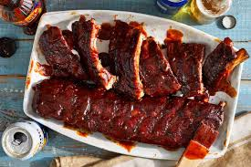

Back Ribs

Description
These pork baby back ribs are tender, and the meat falls right off the bone. Generally, people think of baby back ribs as a meal they would only order at a restaurant, but they are so easy to make at home — this recipe could not be more simple
Ingredients
- 2 pounds pork baby back ribs
- aluminum foil
- cooking spray
- bottle barbecue sauce
Steps
- Cut ribs into 4 equal portions
- Tear off 4 pieces of aluminum foil big enough to enclose each portion of ribs. Grease each piece of foil with cooking spray
- Brush ribs liberally with barbecue sauce; place each portion of ribs on a piece of foil. Wrap tightly and refrigerate for 8 hours to overnight
- Preheat the oven to 150 degrees C. Bake ribs wrapped tightly in foil in the preheated oven for 2 ½ hours. Remove ribs from foil and serve with more sauce, if desired
Home